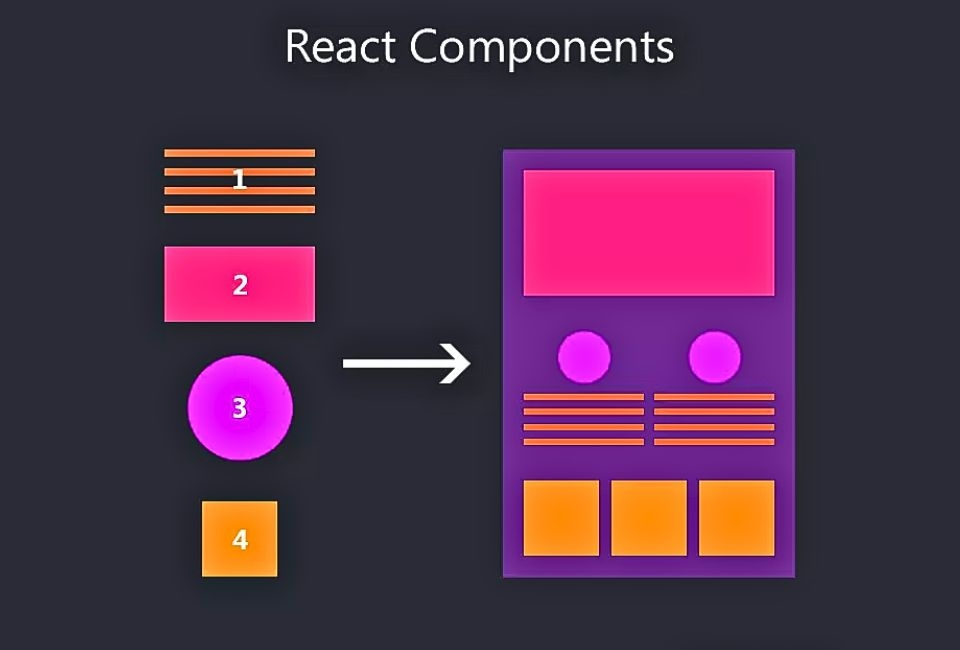
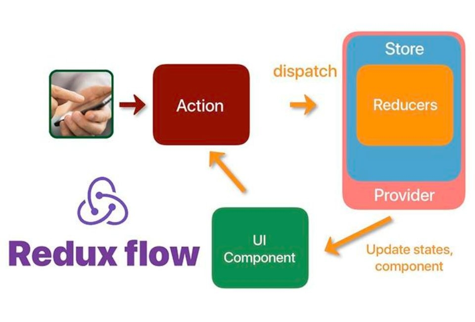

ReactJS là một thư viện JavaScript mã nguồn mở phát triển bởi Facebook và cộng đồng các nhà phát triển trên toàn thế giới. Với đặc tính linh hoạt, đơn giản và dễ sử dụng, ReactJS đã trở thành một trong những công nghệ phát triển web được ưa chuộng nhất hiện nay. Trong bài viết này, Stringee sẽ cùng bạn tìm hiểu về ReactJS - từ lịch sử phát triển, tính năng, cách sử dụng và các dự án thành công đã sử dụng ReactJS để xây dựng.
1. ReactJS là gì?
ReactJS được phát triển bởi Facebook và được giới thiệu lần đầu tiên vào năm 2011. Ban đầu, ReactJS được phát triển để xây dựng giao diện người dùng trên trang web Facebook, nhằm cải thiện tốc độ và hiệu suất của ứng dụng web.
Tuy nhiên, ReactJS không được công bố cho cộng đồng phát triển cho đến năm 2013, khi Facebook công bố mã nguồn mở của nó và giới thiệu cho cộng đồng lập trình viên. Từ đó, ReactJS nhanh chóng trở thành một trong những thư viện phổ biến nhất để phát triển các ứng dụng web động.
Sau đó, vào năm 2015, Facebook giới thiệu phiên bản React Native, một framework phát triển ứng dụng di động sử dụng ReactJS. React Native cho phép các nhà phát triển xây dựng các ứng dụng di động cho cả iOS và Android sử dụng cùng một mã nguồn, tương tự như ReactJS trên web.
Hiện nay, ReactJS đã trở thành một trong những thư viện phát triển web phổ biến nhất, được sử dụng rộng rãi bởi các công ty lớn và nhỏ trên toàn thế giới. Facebook cũng tiếp tục đầu tư phát triển và nâng cấp ReactJS để đáp ứng nhu cầu của cộng đồng phát triển.
2. Những lợi ích tuyệt vời mà ReactJS mang lại cho lập trình viên
ReactJS mang đến nhiều lợi ích cho việc phát triển ứng dụng web, bao gồm:
- Hiệu suất cao: ReactJS sử dụng Virtual DOM để tối ưu hóa hiệu suất của ứng dụng. Virtual DOM cho phép ReactJS cập nhật các thay đổi trên trang web một cách nhanh chóng và hiệu quả hơn so với cách truyền thống, giúp tăng tốc độ và hiệu suất của ứng dụng.
- Tái sử dụng: ReactJS cho phép tái sử dụng các thành phần UI, giúp giảm thiểu thời gian và chi phí phát triển. Các thành phần UI có thể được sử dụng lại trong nhiều phần khác nhau của ứng dụng, giúp tăng tính linh hoạt và khả năng mở rộng của ứng dụng.
- Dễ dàng quản lý trạng thái: ReactJS giúp quản lý trạng thái của ứng dụng một cách dễ dàng. Sử dụng State và Props, ReactJS cho phép các nhà phát triển quản lý trạng thái của các thành phần UI một cách chính xác và dễ dàng.
- Hỗ trợ tốt cho SEO: ReactJS cho phép các nhà phát triển xây dựng ứng dụng web với khả năng tương thích tốt với SEO. Với sự hỗ trợ của các thư viện như React Helmet, ReactJS cho phép các nhà phát triển tùy chỉnh và quản lý các phần tử meta và title cho từng trang web.
- Hỗ trợ đa nền tảng: ReactJS không chỉ được sử dụng để phát triển các ứng dụng web, mà còn được sử dụng để phát triển các ứng dụng di động với React Native. Sử dụng React Native, các nhà phát triển có thể xây dựng ứng dụng di động cho cả iOS và Android sử dụng cùng một mã nguồn.
3. Các tính năng nổi bật của ReactJS
ReactJS có nhiều tính năng hữu ích cho việc phát triển ứng dụng web, bao gồm:
- Components: ReactJS cho phép phát triển ứng dụng web theo mô hình component. Các component là các phần tử UI độc lập có thể được tái sử dụng trong nhiều phần khác nhau của ứng dụng.
- Virtual DOM: ReactJS sử dụng Virtual DOM để tối ưu hóa hiệu suất của ứng dụng. Virtual DOM là một bản sao của DOM được lưu trữ trong bộ nhớ và được cập nhật một cách nhanh chóng khi có thay đổi, giúp tăng tốc độ và hiệu suất của ứng dụng.
- JSX: JSX là một ngôn ngữ lập trình phân biệt được sử dụng trong ReactJS để mô tả các thành phần UI. JSX kết hợp HTML và JavaScript, giúp cho việc viết mã dễ hiểu và dễ bảo trì hơn.
- State và Props: ReactJS cho phép quản lý trạng thái của các thành phần UI thông qua State và Props. State là trạng thái của một thành phần được quản lý bởi nó chính, trong khi Props là các giá trị được truyền vào từ bên ngoài để tùy chỉnh hoặc điều khiển hành vi của một thành phần.
- Hỗ trợ tốt cho SEO: ReactJS hỗ trợ tốt cho việc tối ưu hóa SEO. Với các thư viện như React Helmet, các nhà phát triển có thể quản lý các phần tử meta và title cho từng trang web, giúp tăng khả năng tìm kiếm và tăng cường trải nghiệm người dùng.
- Hỗ trợ đa nền tảng: ReactJS không chỉ được sử dụng để phát triển ứng dụng web, mà còn được sử dụng để phát triển ứng dụng di động với React Native. Sử dụng React Native, các nhà phát triển có thể xây dựng ứng dụng di động cho cả iOS và Android sử dụng cùng một mã nguồn.
- Redux: Redux là một thư viện quản lý trạng thái cho các ứng dụng ReactJS. Nó giúp quản lý trạng thái của ứng dụng một cách chính xác và dễ dàng, đồng thời giúp tăng tính linh hoạt và khả năng mở rộng của ứng dụng.
4. Ba thuật ngữ chính bạn cần biết về React.js
Có ba thuật ngữ liên quan đến React.js mà bạn nên biết. Việc hiểu những cách diễn đạt cơ bản này sẽ giúp bạn nắm bắt được một số nội dung nền tảng.
Components
Đây là những khối thành phần có thể được ghép lại với nhau để tạo ra một ứng dụng. Với React.js, việc xây dựng các thành phần tùy chỉnh tương đối dễ dàng. Đây là một tính năng rất quan trọng vì việc xây dựng các thành phần tùy chỉnh là cần thiết trong 99% trường hợp. Bên cạnh đó, các thành phần có sẵn thường chiếm 10-20% trong các ứng dụng React.js . Bạn cũng có thể sử dụng thư viện giao diện người dùng chính thức hiện có (như Material UI) và chỉ cần kết nối các thành phần với dữ liệu, logic tùy chỉnh.
JSX
JSX là một phần mở rộng cú pháp cho JavaScript cho phép bạn viết HTML và lưu trữ bên trong tệp JavaScript. Mặc dù có nhiều cách khác để tạo nên các thành phần nhưng hầu hết các nhà phát triển React đều thích sự đơn giản của JSX.
Redux
React là thư viện JavaScript front-end phổ biến nhất hiện nay. Từ các công ty khởi nghiệp đến các tập đoàn lớn, ngày càng có nhiều doanh nghiệp áp dụng công nghệ này. Khi một ứng dụng phát triển, việc sắp xếp và duy trì luồng dữ liệu trở nên khó khăn. Đó là lúc cần sử dụng đến Redux. Các thương hiệu nổi tiếng như Netflix, Airbnb và The New York Times đang sử dụng Redux cho trang web và ứng dụng di động của họ.
5. Kết luận
Trong thời đại công nghệ hiện nay, đặc biệt là lĩnh vực phát triển website, công nghệ React.js đang là xu hướng được nhiều doanh nghiệp lựa chọn giúp nâng cao trải nghiệm người dùng một cách hiệu quả và thành công. Ngoài ra, khả năng phát triển và kết hợp của React.js vô cùng mở rộng. Có thể nói, việc biết cách sử dụng React giúp bạn mở rộng vai trò công việc hiện tại và giúp website doanh nghiệp trở nên thu hút hơn trong mắt khách hàng.
Đặc biệt, React có thể được sử dụng với nhiều công nghệ như Bootstrap, Tailwind CSS, Axios, Redux, Firebase,... Bạn cũng có thể sử dụng React với Node.js và các ngôn ngữ phụ trợ khác để xây dựng các ứng dụng web và ứng dụng web đầy đủ chạy với tốc độ cực nhanh.